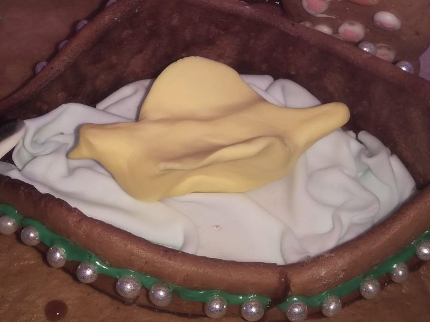

Tavoitteena oli tehdä torille patsas. Ensin piti tehdä kissa, mutta siitä tulikin lintu, joka lentää ruudulla.
Piparkakkutalon tekeminen on perinne. Talon tai kuten tänä vuonna kylän rakentaminen lähtee ideoinnista: mitä tänä vuonna tehdään? Sen jälkeen
piirretään kaavat ja hankitaan materiaali.
Koristelussa toinen painottaa koristeiden määrää, toinen niiden sijoittelua. Hauskinta on keksiä kaikkea pientä yllätystä: ikkunoista pilkisteleviä silmiä,
lammesta karkaavaa krokotiilia, kylää vaanivan susihukan jälkiä, nuotiopaikkaa jne.
JOULUN TAIKAA, ONKO AIKAA? Nuotio leimuaa laavulla, Tonttu kurkkii ikkunassa Tähti taivaalla toivoa tuo Onnea jokainen toiselleen suo Jos aikaa on voi myös vastaanottaa taikaa